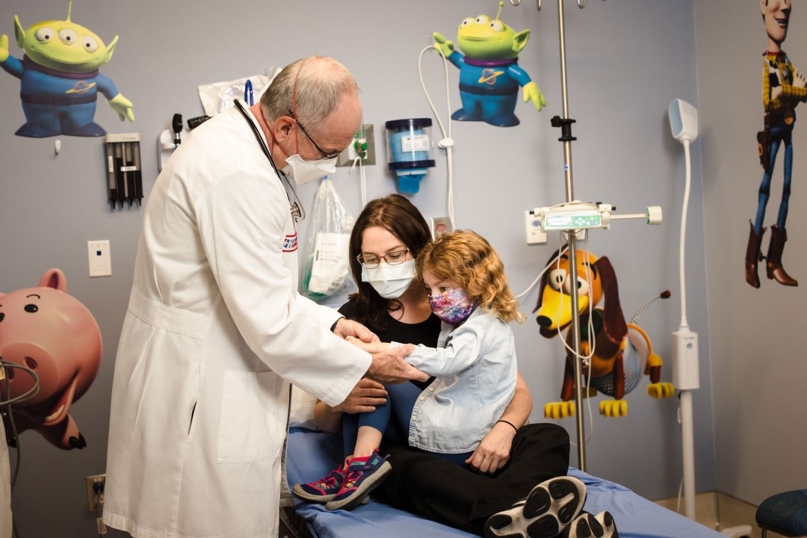

| Branch Name | Depiction | Location | Key Services |
|---|---|---|---|
| Immediate Care Center | Immediate care in a hospital is characterized by several key features designed to address urgent medical needs efficiently.It involves rapid assessment and triage to prioritize patients based on the severity of their condition. Emergency treatment is administered using specialized equipment and advanced technology, with continuous monitoring to ensure patient stability. | ||
| Dental care | Dental care encompasses a range of services aimed at maintaining and improving oral health. It includes routine check-ups, cleanings, and preventive treatments to address issues like cavities and gum disease | ||
| Pediatrics |  | Pediatrics is a medical specialty dedicated to the health and development of infants, children, and adolescents. Pediatric care involves routine check-ups, vaccinations, and growth monitoring to ensure healthy development. |